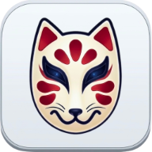

最新ニュース
アメリカとイスラエルがイランへ攻撃こうげき を始はじ めてから10日とおか が過す ぎました。 Борбата продължава 10 дни от началото на атаката срещу Иран | Новини от NHK Easy Words
Текст
アメリカとイスラエルがイランへ攻撃 こうげき 始はじ めてから10日 とおか 過す ぎました
Изминаха десет дни, откакто Съединените щати и Израел започнаха атаки срещу Иран.
トランプ大統領 だいとうりょう 9日 ここのか 今いま までにたくさんの言い いました以上 いじょう 狙ねら った目標 もくひょう 攻撃 こうげき 軍ぐん の船ふね やミサイルなどをたくさん壊こわ したと言い いました
Президентът Тръмп каза на 9-и, че досега е постигнато много.Те казаха, че са атакували повече от 5000 цели и са унищожили много ирански военни кораби и ракети.
イランの近ちか くの海うみ では、原油 げんゆ 運はこ ぶ船ふね が通とお ることが難むずか しくなっています
Стана трудно корабите, превозващи суров петрол, да преминават през моретата близо до Иран.
トランプ大統領 だいとうりょう SNS に「もし、原油 げんゆ 運はこ ぶ船ふね をイランが止と めたらもっと 大おお きい攻撃 こうげき 書か きました
Президентът Тръмп написа в социалните медии: „Ако Иран спре кораб, превозващ суров петрол, ние ще започнем още по-голяма атака“.
イランの軍ぐん の人ひと は「イランを攻撃 こうげき 国くに とそれを助たす ける国くに は原油 げんゆ Lりっとる も運はこ ぶことができない言い っています
Ирански военен служител казва: „Страните, които атакуват Иран и страните, които им помагат, не могат да транспортират дори един литър суров петрол.“
戦たたか いが続つづ いています
Битката продължава.
東日本大震災ひがしにほんだいしんさい が起お きてから、11日にち で15年ねん です。Искам да предам страха от цунами на много хора | Новини от NHK Easy Words
Текст
東日本大震災 ひがしにほんだいしんさい 起お きてから日にち で15年ねん です。
На 11-и се навършват 15 години от голямото земетресение в Източна Япония.
宮城県気仙沼市 みやぎけんけせんぬまし 津波 つなみ 壊こわ れた学校 がっこう 建物 たてもの 今いま も大切 たいせつ 残のこ しています
В град Кесенума, префектура Мияги, училищните сгради, разрушени от цунамито, все още са запазени.
10日 とおか 気仙沼市 けせんぬまし 高校生 こうこうせい 建物 たてもの 見み に来き た人ひと たちに津波 つなみ 話はなし をしました。
На 10-ти гимназисти от град Кесеннума разказаха за цунамито на хората, които дойдоха да видят сградата.
大震災 だいしんさい 歳さい だった高校生 こうこうせい 佐藤 さとう 憂ゆ 奈な さんは家族 かぞく 聞き いた年ねん 前まえ のことや自分 じぶん 勉強 べんきょう 話はな しました逃に げることの大切 たいせつ 伝つた えました
Юна Сато, ученичка от гимназията, която е била на 2 години по време на земетресението, разказа какво й е разказвало семейството й преди 15 години и какво е учила сама.Предадох също колко е важно да избягаме незабавно.
話はなし を聞き いた男性 だんせい 地震 じしん 津波 つなみ 自分 じぶん 関係 かんけい 考かんが えていきたいです話はな しました
Човекът, с когото говорих, каза: „Отсега нататък искам да мисля, че земетресенията и цунамитата имат нещо общо с мен.“
旅行りょこう や仕事しごと で外国がいこく に行い く時とき にはパスポートが必要ひつよう です。Сумата, която трябва да платите, когато получавате паспорт, вероятно ще бъде по-евтина | Новини от NHK Easy Words
Текст
旅行 りょこう 仕事 しごと 外国 がいこく 行い く時とき にはパスポートが必要 ひつよう
Когато отидете в чужда държава за пътуване или работа, имате нужда от паспорт.
政府 せいふ 法律 ほうりつ 変か えて作つく る時とき に払はら うお金かね を今いま までより安やす くしたいと考かんが えています
Правителството иска да промени закона, за да направи получаването на паспорт по-евтино от преди.
10年ねん 使つか うことができるも今いま より円えん 安やす い円えん ぐらいにするつも
Планирам да направя нещо, което може да се използва 10 години за около 9000 йени, което е със 7000 йени по-евтино от текущата цена.
18歳さい 以上 いじょう 場合 ばあい 今いま は5年ねん 使つか うことができるも年ねん のものだけになります。
Ако сте над 18 години, можете да използвате картата си само 10 години вместо 5 години сега.
政府 せいふ 作つく る時とき のお金かね を安やす くして外国 がいこく 行い きやすくしたいと考かんが えています
Правителството иска да улесни пътуването в чужбина, като направи по-евтино получаването на паспорт.
いまの国会 こっかい 法律 ほうりつ 変か わると月がつ 1日ついたち から安やす くなる予定 よてい
Ако настоящата диета промени закона, цените се очаква да станат по-евтини от 1 юли.
ミラノ・コルティナパラリンピックで、日本にっぽん の選手せんしゅ が初はじ めてメダルを取と りました。 Параолимпийският спортист Мураока става първият японски спортист с медал | Новини от NHK Easy Words
Текст
ミラノ・コルティナパラリンピック で、日本 にっぽん 選手 せんしゅ 初はじ めて取と りました
Японски спортист спечели медал за първи път на Параолимпийските игри в Милано-Кортина.
村岡桃佳 むらおかももか 選手 せんしゅ 村岡 むらおか 選手 せんしゅ アルペンスキー の女子 じょし 大回転 だいかいてん 出で ました座すわ って滑すべ る
Това е Момока Мураока.Мураока се състезава в алпийските ски супер-Г за жени.Това е седящ ски клас.
この競技 きょうぎ 右みぎ や左ひだり にカーブしながら速はや い滑すべ ります
В този спорт скейтърите се пързалят с висока скорост, докато правят завои надясно и наляво.
村岡 むらおか 選手 せんしゅ 去年 きょねん 大おお きなけがをして月がつ に練習 れんしゅう 戻もど ったばかりでした難むずか しい上手うま く滑すべ りました銀ぎん メダルを取と りました
Мураока се завърна на тренировки едва през февруари, след като получи сериозна контузия миналата година, но караше трудното трасе добре.И спечелих сребърен медал.
村岡 むらおか 選手 せんしゅ 無事 ぶじ 滑すべ ることができてよ自分 じぶん 褒ほ めたい話はな しています
Мураока каза: „Радвам се, че успях да карам кънки безопасно. Искам да се поздравя.“
Граматика в текстовете
〜ながら Едновременно действие: докато... 〜から Причина: защото / понеже. そして И / и след това. 〜より Сравнение: по-... от... 〜だけ Само / единствено. 〜くらい / 〜ぐらい Около / приблизително / до такава степен. 〜まで До / чак до. 〜までに До (краен срок).
Японски шрифт
Mincho Gothic
vebaev.github.io